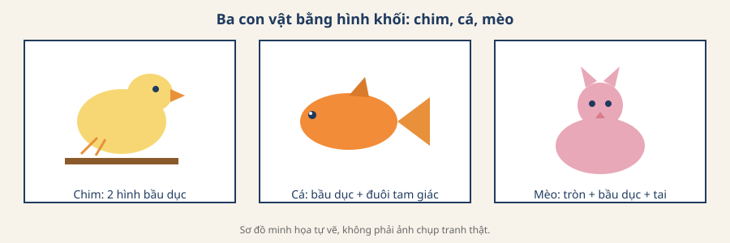

Vẽ động vật nhỏ: chim, cá, mèo — vẽ bằng hình khối đơn giản
Động vật trông khó vẽ vì có nhiều chi tiết: lông, vảy, mỏ, râu, tai. Bạn bỏ qua tất cả những chi tiết đó khi mới bắt đầu. Bạn vẽ động vật bằng hình khối đơn giản: hình tròn cho đầu, hình bầu dục cho thân, hình tam giác cho tai và đuôi. Bạn vẽ ba con vật trong bài này: chim, cá và mèo. Mỗi con chỉ cần 5 bước và một bảng màu giới hạn 2–3 màu. Bạn dùng lại kỹ thuật ướt trên ướt trong bài "Kỹ thuật loang màu (wet-on-wet): màu chảy, mép mềm, không vệt" cho lông và nền, kỹ thuật vẽ trên giấy khô trong bài "Vẽ trên giấy khô (wet-on-dry): nét sắc, chồng lớp, chi tiết" cho mắt và mỏ, và cách vẽ nhà bằng hình khối trong bài "Vẽ nhà và phố nhỏ: nhà, cửa sổ, bóng đổ và người qua đường".

Sơ đồ minh họa tự vẽ — không phải ảnh chụp tranh thật. Ba ô: chim vẽ bằng hai hình bầu dục chồng nhau, cá vẽ bằng hình bầu dục và đuôi tam giác, mèo vẽ bằng hình tròn, hình bầu dục và hai tai tam giác.
Vẽ động vật bằng hình khối
Bạn vẽ con vật thuyết phục nhất khi bạn bắt đầu bằng hình tròn cho đầu và hình bầu dục cho thân và chân. Artistic Haven viết rằng cách dễ nhất để vẽ một con vật thuyết phục là bắt đầu bằng hình tròn cho đầu và hình bầu dục cho thân và chân tay, và bạn đừng lạc vào chi tiết như từng sợi lông hay hướng lông khi mới bắt đầu. Bạn vẽ những hình đơn giản này trước, chúng cho bạn bản đồ hoàn hảo để tô màu theo. Bức tranh của bạn sẽ trông vững chắc và cân đối, dù nét vẽ của bạn hơi run.
Bạn dùng bảng màu giới hạn: mỗi con vật chỉ dùng 2–3 màu. Bạn tô màu vào hình khối, không tô từng chi tiết. Bạn vẽ mắt sau cùng, vì mắt là chi tiết nhỏ nhất và quan trọng nhất: một chấm mắt đặt đúng chỗ làm con vật sống dậy, một chấm mắt đặt sai chỗ làm con vật trông buồn cười.
Bạn dùng giấy màu nước 300 gsm, cold press, khổ nhỏ. Bạn cần cọ tròn cỡ 8 cho thân, cọ tròn cỡ 4 cho chi tiết vừa, cọ tròn cỡ 2 cho mắt và mỏ, bút chì HB và tẩy. Bạn phác thảo bằng bút chì thật nhẹ để nét chì biến mất dưới lớp màu.
Con 1: chim nhỏ
Bạn vẽ chim nhỏ trong 5 bước.
Bước 1: phác thảo hai hình bầu dục. Bạn vẽ một hình bầu dục lớn cho thân và một hình bầu dục nhỏ hơn cho đầu, chồng lên nhau một chút để tạo dáng chim mập mạp, dễ thương. Bạn vẽ bằng nét bút chì thật nhẹ để nét chì biến mất dưới lớp màu.
Bước 2: tô màu thân. Bạn pha một lớp wash màu vàng vui tươi và tô lên hình dáng chim. Bạn để màu đọng nhẹ ở mép để tạo cảm giác mềm và trong. Bạn thêm một chút màu xám để tạo chiều sâu.
Bước 3: vẽ cánh. Bạn vẽ cánh bằng một hình bầu dục nhỏ hơn, màu tối hơn thân một chút, đặt ở giữa thân. Bạn đừng vẽ từng chiếc lông: một mảng màu cánh là đủ.
Bước 4: vẽ đuôi và chân. Bạn vẽ đuôi bằng 3 nét ngắn chụm lại ở phía sau thân. Bạn vẽ chân bằng 2 nét mảnh xuống cành cây. Bạn vẽ cành cây bằng một nét ngang màu nâu.
Bước 5: vẽ mỏ và mắt. Bạn chuyển sang cọ cỡ 2 cho chi tiết nhỏ như mỏ và mắt. Bạn vẽ mỏ bằng một hình tam giác nhỏ màu cam. Bạn vẽ mắt bằng một chấm đen nhỏ với một chấm trắng nhỏ xíu ở cùng một vị trí trong mỗi con mắt để mắt trông ướt và sống động.
Bạn vẽ chim trên cành cây để có bố cục: thân chim tròn, đầu nhỏ, mỏ nhọn, đuôi và cành cây tạo đường ngang. Bạn đặt chân chim lên cành trước khi vẽ nền, và bạn thử tô nền trời nhạt để chim tối hơn nổi bật thành bóng, tương phản đó tạo bố cục nhanh chóng.
Con 2: cá
Bạn vẽ cá trong 5 bước.
Bước 1: phác thảo hình bầu dục và đuôi tam giác. Bạn vẽ một hình bầu dục cho thân, một hình tam giác cho đuôi và vây đơn giản. Bạn vẽ thân cá hơi dẹt ở hai đầu, không vẽ thân tròn đều.
Bước 2: tô màu thân bằng 2–3 màu hài hòa. Bạn dùng 2–3 màu hài hòa cho thân cá, tô màu chính lên toàn bộ thân, rồi thêm tông tối hơn ở một mép để gợi khối. Bạn tô bằng kỹ thuật ướt trên ướt để màu hòa vào nhau như vảy cá.
Bước 3: vẽ vây. Bạn vẽ vây lưng và vây bụng bằng hình tam giác nhỏ, màu tối hơn thân một chút. Bạn đừng vẽ từng tia vây: một mảng màu vây là đủ.
Bước 4: vẽ mắt. Mắt cá phải nhỏ so với đầu. Bạn vẽ mắt bằng một chấm nhỏ màu tối với một chấm trắng nhỏ xíu. Bạn đừng vẽ mắt quá to, vì mắt to làm cá trông như tranh hoạt hình.
Bước 5: gợi vảy và nước. Bạn gợi vảy bằng những chấm tròn lặp lại hoặc nét ngắn, không vẽ từng chiếc vảy riêng. Bạn vẽ nước xung quanh bằng một hoặc hai dải wash rộng, không vẽ chi tiết sóng.
Bạn vẽ cá bơi ngang, thân nằm ngang giấy, đuôi ở phía sau. Bạn vẽ 3 con cá nhỏ với 3 màu khác nhau trên cùng một tờ giấy để luyện pha màu: một con màu cam, một con màu xanh dương, một con màu vàng. Bạn sẽ thấy cùng một hình dáng mà ba màu cho ba con cá khác nhau hoàn toàn.
Con 3: mèo
Bạn vẽ mèo trong 5 bước theo Olly Farmer trên Prominent Painting.
Bước 1: phác thảo hình khối. Bạn phác thảo nhẹ viền ngoài của mèo bằng bút chì, tập trung vào hình dáng cơ bản như đầu, thân và đuôi. Bạn vẽ một hình tròn hơi dẹt cho thân, một hình tròn nhỏ hơn cho đầu đặt lên trên, hai hình tam giác cho tai và hai hình bầu dục nhỏ ở dưới cho chân.
Bước 2: tô nền. Bạn dùng kỹ thuật ướt trên ướt để tạo nền mềm mại. Bạn chọn tông nhạt như xanh da trời hoặc vàng pastel cho nền, để mèo nổi bật trên nền.
Bước 3: tô màu lông. Bạn tô một lớp wash nhạt cho lông mèo, ví dụ màu xám hoặc màu cam. Bạn để khô hoàn toàn để tránh lem màu. Bạn tô thân mèo thành một vùng màu giữa lớn, thay vì vẽ từng sợi lông.
Bước 4: thêm chi tiết. Bạn dùng cọ nhỏ hơn để thêm chiều sâu bằng tông tối hơn cho lông, mắt và mũi. Bạn tô từng lớp màu để tạo kết cấu thật. Bạn vẽ tai bằng màu tối hơn ở mặt trong, vẽ mắt bằng hai hình bầu dục nhỏ với chấm sáng trắng, vẽ mũi bằng một hình tam giác nhỏ màu hồng.
Bước 5: điểm sáng cuối cùng. Bạn chừa những vùng nhỏ không tô để làm điểm sáng tự nhiên, hoặc chấm màu trắng gouache cho điểm sáng ở mắt và mũi. Bạn vẽ râu mèo bằng 3 nét mảnh mỗi bên, vẽ bằng cọ cỡ 2 với màu xám nhạt, không vẽ râu bằng màu đen đậm.
Bạn vẽ mèo đang ngủ để dễ hơn: bạn phác thảo một hình bầu dục lớn hoặc hình chữ C cho thân chính, thu nhỏ đầu và cuộn đuôi quanh thân để tạo dáng gọn. Bạn giữ mọi thứ tròn và mềm, với tai dẹt và một đường đơn giản cho mắt nhắm. Bạn tô các mảng màu không đều: trắng, đen và cam cho mèo tam thể, hoặc một màu duy nhất cho mèo một màu.
Kỹ thuật cho lông, vảy và lông vũ
Bạn dùng 4 kỹ thuật cho các loại bề mặt khác nhau của động vật.
Ướt trên ướt: bạn làm ướt giấy bằng nước sạch rồi tô màu. Cách này tạo hiệu ứng mềm, hòa quyện, hợp với nền và lông mềm.
Ướt trên khô: bạn tô màu trực tiếp lên giấy khô để có nét sắc và rõ ràng. Cách này hợp với mắt, mỏ và chi tiết nhỏ.
Chồng lớp: bạn để lớp đầu khô hẳn trước khi thêm lớp khác, tạo chiều sâu và kết cấu. Bạn tô lông mèo bằng 2–3 lớp chồng lên nhau, mỗi lớp tối hơn lớp trước một chút.
Cọ khô: bạn dùng cọ hơi ẩm với ít màu để tạo nét thô, có kết cấu. Cách này hợp với lông xù và lông vũ: bạn kéo cọ khô dọc theo hướng lông mọc.
Bạn đừng vẽ từng sợi lông. Bạn vẽ khối lông bằng một mảng màu, rồi thêm vài nét cọ khô để gợi lông. Bạn vẽ lông vũ bằng cách tô cánh thành một mảng màu, rồi thêm 2–3 nét cong cho lông cánh.
Lỗi thường gặp
Dùng quá nhiều nước. Nước quá nhiều làm màu nhạt và giấy cong vênh. Bạn thấm bớt nước trên cọ bằng khăn giấy trước khi tô. Bạn dùng băng dính giấy hoặc block dán để giữ giấy phẳng.
Bỏ qua bước phác thảo. Một nét phác thảo nhẹ bằng bút chì giúp cấu trúc bức tranh và giảm lỗi. Bạn đừng vẽ trực tiếp bằng cọ khi chưa phác thảo hình khối.
Tô quá tay. Bạn tránh tô quá nhiều nét, vì tô nhiều làm tranh bị đục. Bạn tô mỗi vùng một lần rồi để yên.
Mắt vẽ sai chỗ. Mắt là chi tiết quyết định con vật có giống thật hay không. Bạn vẽ mắt sau cùng, đặt mắt đúng vị trí: mắt chim ở phía trên đầu, gần mỏ; mắt cá nhỏ so với đầu; mắt mèo hai bên mũi, cách nhau một khoảng bằng một mắt.
Con vật trông cứng và đối xứng. Bạn vẽ hình khối hơi lệch nhau, không vẽ đối xứng hoàn hảo. Bạn cho đuôi hơi cong, đầu hơi nghiêng, chân không thẳng hàng.
Bạn bắt đầu bằng con vật có hình dáng đơn giản như mèo, chim hoặc cá trước khi vẽ con vật phức tạp hơn. Bạn vẽ con vật nhỏ trên giấy nhỏ, mỗi con mất khoảng 15 phút. Bạn vẽ xong một con thì vẽ con khác ngay, đừng dừng lại sửa con đầu tiên quá lâu.
Bài tập: ba con vật trong một buổi
Bạn vẽ ba con vật trong một buổi, mỗi con trên một tờ giấy nhỏ: chim, cá và mèo. Bạn dùng cùng một bảng màu giới hạn 3 màu cho cả ba con: vàng, xanh dương và cam. Bạn vẽ chim bằng hai hình bầu dục, cá bằng hình bầu dục và đuôi tam giác, mèo bằng hình tròn và hai tai tam giác. Bạn đặt ba bức cạnh nhau và xem con nào giống thật nhất, con nào bạn thích nhất. Bạn sẽ thấy cùng một bảng màu mà ba con vật cho ba cảm giác khác nhau, và bạn biết khi nào dùng hình khối nào.
Kết luận
Động vật nhỏ vẽ bằng hình khối đơn giản: hình tròn cho đầu, hình bầu dục cho thân, hình tam giác cho tai, đuôi và mỏ. Bạn tô thân bằng một mảng màu lớn, thêm chi tiết bằng cọ nhỏ, và vẽ mắt sau cùng. Bạn dùng kỹ thuật ướt trên ướt cho lông mềm, ướt trên khô cho mắt và mỏ, cọ khô cho lông xù. Bạn bắt đầu bằng chim, cá và mèo vì chúng có hình dáng đơn giản nhất.
Bài tiếp theo, bài "Vẽ hoa theo mùa: đào, sen, cúc — ba loài hoa, ba mùa", dùng cùng cách vẽ bằng hình khối này cho hoa: hoa đào vẽ bằng chấm tròn kéo thành cánh, hoa sen vẽ bằng cánh lớn chồng lớp, hoa cúc vẽ bằng nhiều cánh mỏng tỏa ra.
Nguồn tham khảo
- Olly Farmer, Prominent Painting, "Easy Guide To Animal Watercolor Painting For Beginners" — 4 kỹ thuật (ướt trên ướt cho nền và lông, ướt trên khô cho nét sắc, chồng lớp, cọ khô cho lông và lông vũ); 5 bước vẽ mèo (phác thảo hình khối, nền ướt trên ướt xanh da trời hoặc vàng pastel, lớp wash nhạt xám hoặc cam để khô hẳn, chi tiết bằng cọ nhỏ, điểm sáng chừa trắng hoặc gouache trắng); bắt đầu bằng mèo, chim hoặc cá vì hình dáng đơn giản; lỗi dùng quá nhiều nước, bỏ phác thảo, tô quá tay; giấy 140 lb trở lên (truy cập 23/11/2026, W-14 mở trực tiếp): https://prominentpainting.com/easy-guide-to-animal-watercolor-painting-for-beginners/
- Artistic Haven, "25 Easy Animal Painting Ideas for Beginners" — vẽ động vật bằng hình tròn cho đầu và hình bầu dục cho thân và chân, không lạc vào chi tiết lông; bảng màu giới hạn; chim mập màu vàng (thân bầu dục lớn + đầu bầu dục nhỏ chồng lên, nét chì nhẹ, wash vàng, chấm xám tạo chiều sâu, mỏ và mắt bằng cọ nhỏ); mèo ngồi bằng hình học (thân tròn dẹt + đầu tròn nhỏ + hai tai tam giác + hai chân bầu dục); mèo ngủ tam thể (thân bầu dục hoặc chữ C, mảng trắng đen cam); mắt vẽ hai chấm trắng nhỏ cùng vị trí để mắt trông ướt và sống động (truy cập 23/11/2026, W-14 mở trực tiếp): https://www.artistichaven.com/easy-animal-painting-ideas/